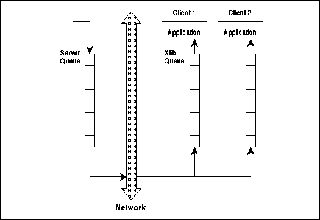
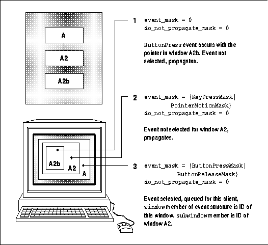
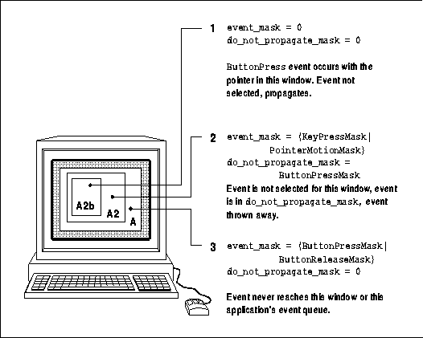
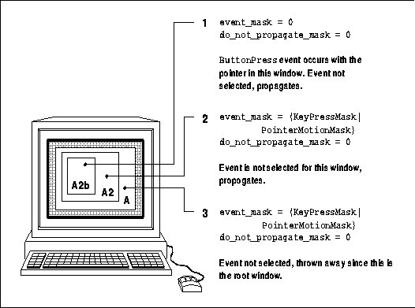
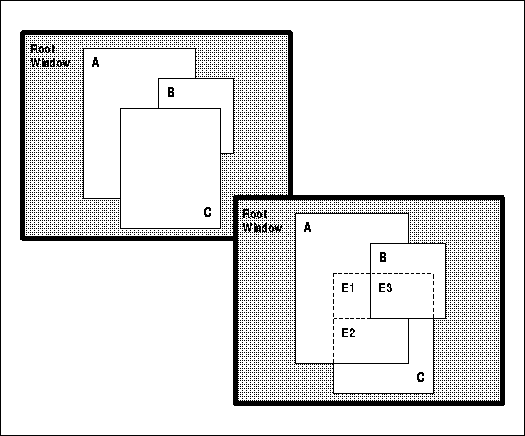

Xlib Programming Manual (O'Reilly & Associates, Inc.) |
An event, to quote the Oxford English Dictionary, is an "incident of importance" or a "consequence, result, or outcome." This definition holds for X. An event reports some device activity or is generated as a side effect of an Xlib routine.
From a programmer's point of view, an event reports:
Events occur asynchronously and get queued for each client that requested them. It is possible for more than one client to get copies of the same event. Usually a program handles each one in turn and performs the appropriate action before reading the next one. But there is usually no way for a program to predict in what order it will find the events on the queue.
This chapter covers events in detail, going further than the introduction to events in Chapter 2, "X Concepts." Here we discuss the event union and structure types, the selection and propagation of events, how each event type is usually used, how events are received and handled in a program, and how they are sent by one client to another.
After you have read and understood this chapter, see Chapter
9, "The Keyboard and Pointer," which demonstrates how to use events to
handle the user's input, and Appendix E, Event Reference, which
describes all the event types in a reference format.
This process is quite simple, the only complication being the variety of events that may occur, each perhaps having a different meaning when it occurs in a different window. You have to know every circumstance in which a particular event is generated and make sure that your program does the right thing with it. But you will not need to understand the details of every event in order to begin using the most important ones.
The easiest way to select events is to call XSelectInput() for each window that you want to receive events. You can also set the event_mask attribute directly with XChangeWindowAttributes() or XCreateWindow(). You specify a mask which specifies which event types you want, combining any number of the event mask symbols with the bitwise OR operator (|).
You must make sure that every window that is to receive events appears on the screen after the events are selected for that window but before the event loop begins. Otherwise, the client will miss the first Expose event that triggers the drawing of the window's contents. For top-level windows, the client might also miss the ConfigureNotify event that reports the size of the window granted by the window manager. For a window to appear on the screen, it must be mapped and all its ancestors must be mapped. It is permissible to map all the windows except the top-level ones at any time, but the mapping of children of the root window must be done between the XSelectInput() call and the routine that gets events for the event loop.
A simple event loop was shown in Chapter 3, "Basic Window Program." The only difference between this loop and the loops in real clients is in the number of different event types handled and the complexity of each branch.
Even though selection of events must be done first, we
are going to start by describing how to handle events once you have them,
because there are fewer details involved. We will return to the exact procedure
for selecting events and the meaning of each event mask symbol in Section
8.3, "Selecting Events."
The XAnyEvent structure
typedef struct {
int type; /* The type of event */
unsigned long serial; /* # of last request processed by server */
Bool send_event; /* True if sent from a SendEvent request */
Display *display; /* Display the event was read from */
Window window; /* Window that receives event */
} XAnyEvent;
There are 30 different event structures. Virtually all of
them have the members shown in the XAnyEvent structure. Most of
the event structures also contain various additional members that provide
useful information for clients. The first member of every event structure,
type, indicates the type of event. We will come back to the type
in Section 8.2.2, "Event Types and XEvent Union." The serial member
identifies the last protocol request processed by the server, for use in
debugging. The send_event flag indicates whether this event was
sent from the server (False) or from another client (True).
Other clients can send events with XSendEvent(), as described in
Section 8.4, "Sending Events."
Many of the event structures also have a display member or a root member or both. The display member identifies the connection to the server that this event came from. (Some applications connect with more than one server.) The root member indicates the screen on which the event occurred (a server may control more than one screen). Most programs only use a single screen and therefore do not need to worry about the root member. The display member can be useful for passing the display variable into routines by simply passing a pointer to the event structure.
Most event structures also have a window member, which indicates the window that selected and received the event. This is the window where the event arrives if it is a keyboard or pointer event and has propagated through the hierarchy, as described in Section 8.3.2, "Propagation of Device Events." One event type may have two different meanings to a client, depending on which window the event appears in.
The value of type is any one of the constants listed in the center column of Table 8-3, presented later in this chapter. After determining the event type, you know which event structure from the XEvent union contains specific information about the event. You can then use the appropriate event structure name, such as xkey, to access the specific information unique to that event structure. The event structure name is also shown on each event reference page in Appendix E, Event Reference.
The XEvent union
typedef union _XEvent {
int type; /* Must not be changed; first member */
XAnyEvent xany;
XKeyEvent xkey;
XButtonEvent xbutton;
XMotionEvent xmotion;
XCrossingEvent xcrossing;
XFocusChangeEvent xfocus;
XKeymapEvent xkeymap;
XExposeEvent xexpose;
XNoExposeEvent xnoexpose;
XGraphicsExposeEvent xgraphicsexpose;
XVisibilityEvent xvisibility;
XCreateWindowEvent xcreatewindow;
XDestroyWindowEvent xdestroywindow;
XUnmapEvent xunmap;
XMapEvent xmap;
XMappingEvent xmapping;
XMapRequestEvent xmaprequest;
XReparentEvent xreparent;
XConfigureEvent xconfigure;
XGravityEvent xgravity;
XResizeRequestEvent xresizerequest;
XConfigureRequestEvent xconfigurerequest;
XCirculateEvent xcirculate;
XCirculateRequestEvent xcirculaterequest;
XPropertyEvent xproperty;
XSelectionClearEvent xselectionclear;
XSelectionRequestEvent xselectionrequest;
XSelectionEvent xselection;
XColormapEvent xcolormap;
XClientMessageEvent xclient;
} XEvent;
The server's event queue and client's event queue

The client sets up an event-receiving loop to handle the events that arrive on its event queue. There are several routines a client can use to get events. They differ in how many windows they monitor, how many types of events they look for, and whether they wait for events to appear before returning. For a description of the event-getting routines, see Section 8.2.6, "Routines that Get Events."
The branch for Expose events in Example 8-3 demonstrates how an event might be handled when there are several windows involved. The example also notes when each of the selected events--and the events that may be delivered without your selecting them--should be handled within your event loop. Depending on your application, other events might need to be handled as well.
Notice how the specific event structure names such as xexpose are used to access information in the event structures.
An event-handling loop
XEvent report;
Window window1, window2, window3;
.
.
.
/* Open display, create windows, etc. */
/* Window 1 is a top-level window, window 2 is a child
* of window 1 */
XSelectInput(display, window1, StructureNotifyMask | ExposureMask
| ButtonPressMask);
XSelectInput(display, window2, ExposureMask);
XSelectInput(display, window3, ExposureMask);
XMapWindow(display, window1);
XMapWindow(display, window2);
XMapWindow(display, window3);
/* Get events, use first to display text and graphics */
while (1)
{
/* Get any type of event on any window; this gets
* events on every window for which we have selected
* events (three in this case) */
XNextEvent(display, &report);
switch (report.type) {
case Expose:
printf("got an Expose event\n");
/* Redraw contents of windows; note that we can't
* use switch because window IDs are not constant */
if (report.xexpose.window == window1)
/* Redraw window 1 */;
else if (report.xexpose.window == window2)
/* Redraw window 2 */;
else (report.xexpose.window == window3)
/* Redraw window 3 */;
break;
case ButtonPress:
printf("got a ButtonPress event\n");
/* Respond to buttonpress, probably depending on
* which window is reported in report.xbutton.window */
break;
case ConfigureNotify:
printf("got a ConfigureNotify event\n");
/* Window was resized, moved, or restacked or border
* width was changed; reset application variables
* so Expose branch will scale graphics properly */
break;
case MappingNotify:
printf("got a MappingNotify event\n");
/* Keyboard or Pointer mapping was changed by another
* client; if keyboard, should call XRefreshKeyboardMapping,
* unless keyboard events are not used */
break;
case ClientMessage:
printf("got a ClientMessage event\n");
/* Primarily used for transferring selection data,
* also might be used in a private interclient
* protocol; otherwise, not needed in event loop */
break;
case SelectionClear:
printf("got a SelectionClear event\n");
/* If this application previously called
* XSetSelectionOwner, it may get this event;
* otherwise, you don't need it in your
* event loop */
break;
case SelectionNotify:
printf("got a SelectionNotify event\n");
/* If this application calls XConvertSelection,
* it will get this event; otherwise, you don't
* need it in your event loop */
break;
case SelectionRequest:
printf("got a SelectionRequest event\n");
/* If this application previously called
* XSetSelectionOwner, it may get this event;
* otherwise, you don't need it in your
* event loop */
break;
case GraphicsExpose:
/* Fall through into NoExpose */
case NoExpose:
printf("got a GraphicsExpose or NoExpose event\n");
/* If this application calls XCopyArea or XCopyPlane
* and the graphics_exposures member of the GC is
* True and the source is a window, these events may
* be generated; handle GraphicsExpose like Expose */
default:
printf("Event being thrown away\n");
/* All *Notify events except ConfigureNotify will
* be thrown away; they are not needed by most
* applications but are sent because ConfigureNotify
* can't be selected independently */
break;
} /* End switch on event type */
} /* End while (1) */
The XNextEvent() routine gets the next event on the
queue for our client or waits until one appears before returning. There
are many other routines that get events of particular types, in particular
windows, with or without waiting for the event to appear. These routines
are described in Section 8.2.6, "Routines that Get Events."
The first member of the XEvent report contains the type of event. This information is used in a "switch" statement to branch according to the event type. Once the type is known, the specific event structure is known, and its contents can be accessed. For example, the width of the exposed area in the window is contained in the XExposeEvent structure as report.xexpose.width, where report is the XEvent variable, xexpose is the member of the XEvent union, and width is a member of the XExposeEvent structure type.
Instead of printing the event type as a number which you then have to interpret using the <X11/X.h> include file, you can have your program print the real name of the event. Example 8-4 creates an include file containing an array of strings spelling out the event type names. Example 8-5 then prints the correct event name.
An include file for printing the event type -- eventnames.h
static char *event_names[] = {
"",
"",
"KeyPress",
"KeyRelease",
"ButtonPress",
"ButtonRelease",
"MotionNotify",
"EnterNotify",
"LeaveNotify",
"FocusIn",
"FocusOut",
"KeymapNotify",
"Expose",
"GraphicsExpose",
"NoExpose",
"VisibilityNotify",
"CreateNotify",
"DestroyNotify",
"UnmapNotify",
"MapNotify",
"MapRequest",
"ReparentNotify",
"ConfigureNotify",
"ConfigureRequest",
"GravityNotify",
"ResizeRequest",
"CirculateNotify",
"CirculateRequest",
"PropertyNotify",
"SelectionClear",
"SelectionRequest",
"SelectionNotify",
"ColormapNotify",
"ClientMessage",
"MappingNotify"
};
Note that eventnames.h is not a standard include file
but one we have written for the purpose of printing the event type more
legibly. You could use a similar method to identify windows, but since
their IDs are not constants, you would need to load the array dynamically
after you have created the windows.
Example 8-5 demonstrates printing an event using the include file shown in Example 8-4.
Printing the event type
#ifdef DEBUG #include "eventnames.h" #endif XEvent event; XNextEvent(display, &event); #ifdef DEBUG fprintf(stderr, "winman: got a %s event\n", event_name[event.type]); #endif
You may notice that there are two broad categories of routines that get input: those that wait for a matching event and those that do not wait. The latter may be used in porting applications that use the "polling" style of programming, which checks to see if input has arrived at regular intervals by continuously calling a "polling" function in a loop. Given the choice, however, it is much better to use the routines that wait for events as much as possible, since this technique does not waste processor cycles. This is true event-driven programming.
Table 8-1 organizes the event-receiving functions according
to whether they wait for events if none are present on Xlib's queue.
| Event Specifications | Desired Result:Wait if necessary | Desired Result:Return False immediately if none queued | Desired Result:Leave in queue (may wait) |
|---|---|---|---|
| Any event | XNextEvent | n/a | XPeekEvent |
| With predicate | XIfEvent | XCheckIfEvent | XPeekIfEvent |
| For window | XWindowEvent | XCheckWindowEvent | n/a |
| For event mask | XMaskEvent | XCheckMaskEvent | n/a |
| For type | n/a | XCheckTypedEvent | n/a |
| For window and type | n/a | XCheckTypedWindowEvent | n/a |
Note that most of the routines apparently missing from Xlib according to Table 8-1 can be simulated with other routines and fairly simple code. The hole on the top row can be filled by calling XCheckMaskEvent() with a mask set to all 1's. For the four routines missing in the last column, you can write a predicate procedure and call XPeekIfEvent(). An example predicate procedure is shown in Example 8-6. The two routines missing in the first column can also be replaced with a predicate procedure and XIfEvent().
The event-getting routines with Check in their names are useful for programs that need to poll for input to handle interrupts. To illustrate the handling of interrupts, let's say you have a routine in a program that performs a complex, lengthy calculation like a Fourier transform. You want to be able to abort the calculation midway. Therefore, you need to be able to check the keyboard to see if a CTRL-C or other interrupt character has been typed. You also might want to provide for exposure events during the long wait, though you might be able to get away without this provision. This would be a good application for XCheckTypedEvent() or XCheckTypedWindowEvent(), since these routines poll without waiting if no events can be read. When an event does arrive, you can decide from the type or window whether to bother processing it.
Your predicate procedure is called with the same arguments as the event-getting routine (except for the predicate procedure pointer, of course). Example 8-6 shows a predicate procedure and the XIfEvent() call that uses it. This code would normally use XNextEvent(), but we have substituted XIfEvent() so that we can filter out button events on buttons other than button 1. This predicate procedure returns True for all events except the undesirable button events.
A predicate procedure and XIfEvent() call
void main(argc, argv)
int argc;
char **argv;
{
.
.
.
Bool predproc();
static char *stuff = "do this or that";
.
.
.
XSelectInput(display, wint, ExposureMask | ButtonPressMask
| ButtonReleaseMask | ButtonMotionMask
| PointerMotionHintMask);
.
.
.
while (1) {
XIfEvent(display, &report, predproc, stuff);
switch (report.type) {
/* Note that no code here for eliminating button
* events on other buttons, because only button
* one events are returned by XIfEvent */
case ButtonPress:
points[index].x = report.xbutton.x;
points[index].y = report.xbutton.y;
break;
case ButtonRelease:
index++;
points[index].x = report.xbutton.x;
points[index].y = report.xbutton.y;
break;
.
.
.
}
}
}
Bool predproc(display, event, arg)
Display *display;
XEvent *event;
char *arg;
{
printf("The arg is %s\n", arg);
switch (event->type) {
case Expose:
case MotionNotify:
case ConfigureNotify:
case KeyPress:
return(True);
break;
case ButtonPress:
case ButtonRelease:
if (event->xbutton.button == Button1)
return(True);
else
return(False);
break;
default:
}
}
To select event types for a window, pass an event_mask as an argument to XSelectInput() or set the event_mask member of the XSetWindowAttributes structure and call XChangeWindowAttributes() or XCreateWindow(). (For more information on the XSetWindowAttributes structure, see Section 4.1, "Setting Window Attributes.")
The event_mask is formed by combining the event mask symbols listed in the first column of Table 8-2 with the bitwise OR operator (|). Each mask symbol sets a bit in the event_mask.
Table 8-2 also describes briefly the circumstances under
which you would want to specify each symbol. You will need to read about
each mask in Section 8.3.3, "Event Masks"; see the examples using the events
in Chapter 9, "The Keyboard and Pointer," and throughout this manual; and
look at the event structures in Appendix E, Event Reference, before
you will really understand when to use each of these symbols.
| Event Mask Symbol | Circumstances |
|---|---|
| NoEventMask | No events |
| KeyPressMask | Keyboard down events |
| KeyReleaseMask | Keyboard up events |
| ButtonPressMask | Pointer button down events |
| ButtonReleaseMask | Pointer button up events |
| EnterWindowMask | Pointer window entry events |
| LeaveWindowMask | Pointer window leave events |
| PointerMotionMask | All pointer motion events |
| PointerMotionHintMask | Fewer pointer motion events |
| Button1MotionMask | Pointer motion while button 1 down |
| Button2MotionMask | Pointer motion while button 2 down |
| Button3MotionMask | Pointer motion while button 3 down |
| Button4MotionMask | Pointer motion while button 4 down |
| Button5MotionMask | Pointer motion while button 5 down |
| ButtonMotionMask | Pointer motion while any button down |
| KeymapStateMask | Any keyboard state change on EnterNotify , LeaveNotify , FocusIn or FocusOut |
| ExposureMask | Any exposure (except GraphicsExpose and NoExpose ) |
| VisibilityChangeMask | Any change in visibility |
| StructureNotifyMask | Any change in window configuration. |
| ResizeRedirectMask | Redirect resize of this window |
| SubstructureNotifyMask | Notify about reconfiguration of children |
| SubstructureRedirectMask | Redirect reconfiguration of children |
| FocusChangeMask | Any change in keyboard focus |
| PropertyChangeMask | Any change in property |
| ColormapChangeMask | Any change in colormap |
| OwnerGrabButtonMask | Modifies handling of pointer events |
The do_not_propagate_mask window attribute is formed in the same way as event_mask but can only be set with XChangeWindowAttributes() or XCreateWindow(). Its function is described in Section 8.3.2, "Propagation of Device Events."
Example 8-7 shows how to set the event_mask and call XSelectInput().
An example of selecting input
In Example 8-7, events are selected before the window is mapped. This sequence is important, since otherwise the window will not receive the first Expose event that occurs after a new window is mapped and it will not know when to redraw the window. You will remember from basicwin that an Expose event signifies that a window has become visible and needs to be redrawn. Every Expose event, including the first, should trigger the drawing of the window's contents.Display display; Window window; unsigned long event_mask; . . . /* Must open display, create window, etc. */ /* Select key events */ event_mask = ExposureMask | KeyPressMask | KeyReleaseMask; XSelectInput(display, window, event_mask); /* Map window after selecting */ /* Get events */
Also, note that you cannot add to the selected events by calling XSelectInput() with a single additional mask. You must specify all the desired event masks every time you call it.
On the other hand, there is more than one event mask symbol for MotionNotify events; the different masks specify the conditions under which pointer motion events are desired. For example, if both Button1MotionMask and Button3MotionMask symbols are combined to form an event_mask argument to XSelectInput(), only one event type is requested: MotionNotify events. However, this event type will be queued only if the pointer moves while the first or third button (or both) is held down.
Table 8-3 lists each event mask, its associated event
types, and the associated structure definition. The structures for each
event type are described in Appendix E, Event Reference.
| Event Mask | Event Type | Structure |
|---|---|---|
| KeyPressMask | KeyPress | XKeyPressedEvent |
| KeyReleaseMask | KeyRelease | XKeyReleasedEvent |
| ButtonPressMask | ButtonPress | XButtonPressedEvent |
| ButtonReleaseMask | ButtonRelease | XButtonReleasedEvent |
| OwnerGrabButtonMask | n/a | n/a |
| KeymapStateMask | KeymapNotify | XKeymapEvent |
| PointerMotionMask PointerMotionHintMask ButtonMotionMask Button1MotionMask Button2MotionMask Button3MotionMask Button4MotionMask Button5MotionMask | MotionNotify | XPointerMovedEvent |
| EnterWindowMask | EnterNotify | XEnterWindowEvent |
| LeaveWindowMask | LeaveNotify | XLeaveWindowEvent |
| FocusChangeMask | FocusIn FocusOut | XFocusInEvent XFocusOutEvent |
| ExposureMask | Expose | XExposeEvent |
| (Selected in GC by graphics_expose member) | GraphicsExposeNoExpose | XGraphicsExposeEventXNoExposeEvent |
| ColormapChangeMask | ColormapNotify | XColormapEvent |
| PropertyChangeMask | PropertyNotify | XPropertyEvent |
| VisibilityChangeMask | VisibilityNotify | XVisibilityEvent |
| ResizeRedirectMask | ResizeRequest | XResizeRequestEvent |
| StructureNotifyMask | CirculateNotify ConfigureNotify DestroyNotify GravityNotify MapNotify ReparentNotify UnmapNotify | XCirculateEvent XConfigureEvent XDestroyWindowEvent XGravityEvent XMapEvent XReparentEvent XUnmapEvent |
| SubstructureNotifyMask | CirculateNotify ConfigureNotify CreateNotify DestroyNotify GravityNotify MapNotify ReparentNotify UnmapNotify | XCirculateEvent XConfigureEventXCreate WindowEvent XDestroyWindowEvent XGravityEvent XMapEvent XReparentEvent XUnmapEvent |
| SubstructureRedirectMask | CirculateRequest ConfigureRequest MapRequest | XCirculateRequestEven XConfigureRequestEven XMapRequestEvent |
| (Always selected) | MappingNotify | XMappingEvent |
| (Always selected) | ClientMessage | XClientMessageEvent |
| (Always selected) | SelectionClear | XSetSelectClearEvent |
| (Always selected) | SelectionNotify | XSelectionEvent |
| (Always selected) | SelectionRequest | XSelectionRequestEvent |
There is no event mask for several of the event types listed at the end of this table, because the X server or another client can send them to any client without them being selected. For example, MappingNotify indicates that the keyboard mapping (see Section 9.1.2.3, "Keycodes to Keysyms") or pointer mapping has changed. This event is reported to all clients by the server when any client changes those mappings. The selection events are a means of interclient communication, where one client announces with an event that it has a selection of text or graphics available for pasting, and another client responds with an event specifying in what format it would like the information. Similarly, ClientMessage events are always selected because they are sent from one client directly to another using the XSendEvent() routine.
Also note that SubstructureNotifyMask and StructureNotifyMask select the same event types but on different windows. The former selects the events when they occur in any child of the window specified in the call to XSelectEvent(), and the latter only when they occur in the window specified. (These are perhaps the two least often used masks.)
Which window is reported in the event on the queue depends on the results of propagation up through the window hierarchy and is controlled by the event_mask and do_not_propagate_mask window attributes.
The source window is the lowest visible window in the hierarchy that encloses the pointer when the device event occurs. It is also the smallest visible window enclosing the pointer. The window member of the event in the queue (the event window) will be the source window only if the event_mask attribute (set with XSelectInput()) of the source window selected the event's type.
If the event was not selected for the source window, then the event is sent to the parent and so on until the event arrives at an ancestor window that has selected the right event type. The ID of this window is then placed in the window member of the event structure and that structure is placed on the queue for this client. Once a window that has selected the event is found, the event no longer propagates. If no window selected the event anywhere in the hierarchy up to and including the root window, the server never sends the event.
The do_not_propagate_mask window attribute also gets involved in this process. When an event arrives at a window but finds it has not been selected, the do_not_propagate_mask determines whether the event will be sent to ancestor windows. By default, all events that can propagate do. If the mask for the event type that occurred is included in the do_not_propagate_mask, the event is never sent.
Figures 8-2a, 8-2b, and 8-2c demonstrate the propagation of an event through the hierarchy, given three different event_mask and do_not_propagate attribute settings.
One possible selection scheme

The do_not_propagate_mask is rarely used. However, here is one scenario in which setting the do_not_propagate_mask attribute would be useful. Consider an application with two windows, a parent and a child. The program lets the user draw in the child by moving the pointer while holding down a pointer button. However, like basicwin, the application exits on a ButtonPress event in the parent window. Since ButtonPress events are not selected in the child window, they will be propagated to the parent and will cause the application to exit. But a ButtonPress is necessary because we want the drawing in the child window to occur only when a button is held. By setting the do_not_propagate_mask attribute of the child window to ButtonPressMask, this problem is solved.
Another possible selection scheme

Yet another possible selection scheme

Here's an example of where event propagation requires care in selecting events. Imagine a program that creates one large window and a small subwindow. The large window takes ButtonPress events to exit, and the small subwindow draws dots whenever the pointer is moved with a button held down. If you select ButtonPressMask alone for the parent, and ButtonMotionMask alone for the child, it does not work! The reason is that when the ButtonPress occurs, it propagates to the parent, and initiates a grab of all pointer events. (This is an automatic grab, discussed in the next section, not the result of an XGrabButton() or XGrabPointer() call). Since the parent did not select motion events, no MotionNotify events are received by the program. The moral of the story is that if a parent (or any ancestor) selects ButtonPress events, then its children must also select ButtonPress events in order for the children to get any other type of pointer events (including MotionNotify, EnterNotify, LeaveNotify).
For brevity, we need conventions for describing the distribution of events. We'll say that an event is sent to a window when it is generated in that window either because of device action or as a side effect to an Xlib routine. A window receives an event sent to it only if the window has selected that event type or if the event type is always selected. Only when a window receives an event is it placed on the queue for that client. Another convention is helpful in describing the selection of events. We will say that "the window has selected that event type" rather than the more cumbersome "the program has called XSelectInput(), specifying the window and the mask that selects that event type."
We have described the way device events propagate normally. But two other actions can modify this operation: changing the keyboard focus window or grabbing the keyboard or pointer. Not only do these change the distribution of normal events, they create new events as side effects. We'll just introduce these here and return to them in Chapter 9, "The Keyboard and Pointer."
The keyboard focus is set to a window with XSetInputFocus(). The focus window must be viewable. If it is not viewable or later becomes not viewable, the focus reverts to another window specified in the XSetInputFocus() call, the revert_to window.
The current focus window can be read with XGetInputFocus().
FocusOut events are delivered to the old focus window, and FocusIn events to the window which receives the focus. Windows in between these two windows in the hierarchy are said to be virtually crossed and receive focus change events depending on the relationship and direction of transfer between the origin and destination windows. Some or all of the windows between the window containing the pointer at the time of the focus change and that window's root can also receive focus change events. By checking the detail member of FocusIn and FocusOut events, a client can tell which of its windows can receive input. See Chapter 9, "The Keyboard and Pointer," for more information about tracking the keyboard focus.
Applications should set the keyboard focus to one of their own windows only when absolutely necessary, because this will prevent other clients from receiving keyboard events. It is permissible for clients to set the focus window when the mouse enters their top-level window, as long as they set it back to the root window when the pointer leaves again. A client might want to do this to send all keyboard input to one of its subwindows. See Chapter 12, "Interclient Communication," for more information about what a client should do regarding the keyboard focus.
In general, grabbing is an advanced topic that you do not need to understand in detail until you find a reason to use it. But there are two exceptions to this rule. You do need to know what will happen when other clients grab, so that your client can prepare for it. Secondly, an automatic grab takes place between ButtonPress and ButtonRelease events if your client has selected both. You must understand grabbing to understand the implications of this automatic grab.
An active grab causes pointer and keyboard events to be sent to the grabbing window regardless of the current position of the pointer. Active grabs are invoked directly by calling XGrabPointer() and XGrabKeyboard(). A passive grab (invoked by calling XGrabKey() or XGrabButton()) causes an active grab to begin when a certain key or button combination is pressed. Passive grabs are useful in implementing menus.
When you grab a device, you have the option of confining the pointer to any window within the grabbing client and of controlling the further processing of both keyboard and pointer events.
Grabbing the keyboard effectively selects all keyboard events, whether you selected them previously or not. Grabbing the keyboard also causes FocusIn and FocusOut events to be sent to the old and new focus windows, but they must be selected by each window to be received. In the call to grab the pointer, however, you specify what types of pointer, button, and enter/leave events you want.
Grabs take precedence over the keyboard focus window. Grabs of the keyboard generated FocusIn and FocusOut events, so that if your client selects these, it can determine whether or not it can get keyboard events. Pointer grabbing is more problematic, since no event notifies other clients when one client has grabbed it. However, pointer grabs are almost always temporary.
For more on keyboard and pointer grabbing, see Section 9.4, "Grabbing the Keyboard and Pointer." For a description of server grabbing, which is a different topic though still related to events, see Chapter 16, "Window Management."
The KeyPress and KeyRelease events provide a keycode that identifies the key, but the keycodes are server-dependent and should not be used to interpret the event. Instead you can use XLookupString() to translate the keycode into a portable symbol called a keysym, which represents the symbol on the cap of the key, and into an ASCII character string. Both the mapping between keycodes and keysyms and the mapping between keysyms and ASCII strings can be modified.
In XLookupString(), the main routine used for interpreting KeyPress and KeyRelease events, there is a provision for a special Compose key which is available on some keyboards, so that multikey sequences, usually used to type characters for languages other than English, can be entered and translated into the appropriate keysym. The Compose key feature, however, is not implemented in the versions of Xlib provided by MIT.
The events selected by KeyPressMask and KeyReleaseMask are used in the examples in Section 9.1.1, "Simple Keyboard Input."
The pointer is automatically grabbed between the ButtonPress and ButtonRelease events on behalf of the client for whose window the ButtonPress was selected. This way, you always expect to receive button events in pairs since the release will be sent to your client regardless of the position of the pointer at that time. Only one client can select button events on any one window at one time, due to the grab that automatically takes place.
The OwnerGrabButtonMask does not select any event by itself, but it controls the distribution of button events to your client during the automatic grab between the ButtonPress and ButtonRelease (and during any grab your client might make). If it is selected, the automatic grab has the same effect as an XGrabButton() call with the owner_events argument set to True, so that the ButtonRelease event is sent to whichever of the client's windows the pointer is in. If the ButtonRelease occurs outside the client's windows or if OwnerGrabButtonMask is not selected, all events will be sent only to the window where the ButtonPress occurred. Current wisdom suggests that you should always select OwnerGrabButtonMask with ButtonPressMask.
The events selected by ButtonPressMask and ButtonReleaseMask are discussed in Section 9.2.2, "Handling Pointer Button Events" and demonstrated in Examples 9-9, 16-1, and 16-2.
EnterNotify, LeaveNotify, FocusIn, and FocusOut events are often used together to track whether the pointer is in a window and whether the client has the keyboard focus. If the focus is the root, EnterNotify and LeaveNotify events are used. With any other focus, the FocusIn and FocusOut events take precedence.
FocusIn and FocusOut events are described and used in Section 9.3, "Border Crossing and Keyboard Focus Change Events."
An EnterNotify event is also generated when a window is mapped over the current position of the pointer, and a LeaveNotify is generated when a window containing the pointer is unmapped.
EnterNotify and LeaveNotify events are described and used in Section 9.3, "Border Crossing and Keyboard Focus Change Events."
This event type, if it is selected, always follows immediately after an EnterNotify or FocusIn event. It allows a client to find out which keys were pressed when the pointer or the keyboard focus entered the window. Since the state of the modifier keys is already reported in EnterNotify and FocusIn events, the KeymapNotify event is only useful for reporting the state of other keys.
KeymapState events are not used in the examples in this manual, because they are rarely needed. For more information about them, see Appendix E, Event Reference.
Expose events generated by lowering of window C

The handling of Expose events is fully described and demonstrated in Section 3.2.13.1, "Repainting the Window."
The symbol returned in the state flag of the event
is shown in the third column of the table.
| Beginning State | Final State | state Flag |
|---|---|---|
| unobscured | partially obscured | VisibilityPartiallyObscured |
| unobscured | fully obscured | VisibilityFullyObscured |
| partially obscured | unobscured | VisibilityUnobscured |
| partially obscured | fully obscured | VisibilityFullyObscured |
| fully obscured | unobscured | VisibilityUnobscured |
| fully obscured | partially obscured | VisibilityPartiallyObscured |
| not viewable | unobscured | VisibilityUnobscured |
| not viewable | partially obscured | VisibilityPartiallyObscured |
| not viewable | fully obscured | VisibilityFullyObscured |
VisibilityNotify events are not demonstrated in this manual. For more information on them, see Appendix E, Event Reference.
ColormapNotify events are discussed in Section 7.10.2, "The ColormapNotify Event."
The uses of PropertyNotify events are described in Chapter 12, "Interclient Communication."
SubstructureNotifyMask selects the same events plus one that indicates that a window has been created; it monitors all the subwindows of the window specified in the XSelectInput() call that used this mask. Only SubstructureNotifyMask selects CreateNotify events, because the window does not exist beforehand, and therefore, no ID exists to use in a call to XSelectInput() using StructureNotifyMask.
Applications often select StructureNotifyMask to be notified that they have been manipulated by the window manager or some other client, so that they can act accordingly.
The following list describes the events selected by StructureNotifyMask and SubstructureNotifyMask:
These events differ from CirculateNotify, ConfigureNotify, and MapNotify in that the *Request events deliver the parameters of the request before the requests are carried out and indicate that the original request has been cancelled. The *Notify requests indicate the final outcome of such requests, unhindered.
Each of the event structures associated with the following event types includes an override_redirect member, which is either True or False. If it is True, the window manager should ignore the event, since this indicates that the client has set the override_redirect attribute to indicate that this is a temporary window. (For more information, see Section 16.2, "Substructure Redirection.")
This event includes the requested size. The final size may be adjusted by the window manager and can be found from the resulting ConfigureNotify event or, if the window is visible, from the Expose event.
A client might wish to select this mask if it has only one acceptable size. Then when any client attempted to resize the window, the request would be sent as an event and can be safely ignored. However, if some client (say, the window manager) has selected SubstructureRedirectMask for the parent of the window on which ResizeRedirectMask was selected, the substructure redirect takes precedence. Therefore, this usually will not work. ResizeRedirectMask is not very useful, given that most window managers select SubstructureRedirectMask.
The send_event member of each event structure indicates
the origin of the event. If True, it was sent from another client
rather from the server. Note that, unless this flag is explicitly checked,
events from the server and from other clients will appear the same to your
application.
| Event Type | Section |
|---|---|
| KeyPress KeyRelease | Section 9.1.1.1 |
| ButtonPress ButtonRelease | Section 9.2.2 |
| KeymapNotify | Section 9.3.1 |
| MotionNotify | Section 9.2.1 |
| EnterNotify LeaveNotify | Section 9.3 |
| FocusIn FocusOut | Section 9.3 |
| Expose | Section 3.2.13.1 |
| GraphicsExpose NoExpose | Section 5.6 |
| ColormapNotify | Section 7.10.2 |
| PropertyNotify | Section 12.1 |
| ConfigureNotify | Section 3.2.16 |
| CirculateRequest ConfigureRequest MapRequest | Section 16.2 |
| MappingNotify | Section 9.1.2.3 |
| SelectionClear | Section 12.4 |
| SelectionNotify | Section 12.4 |
| SelectionRequest | Section 12.4 |